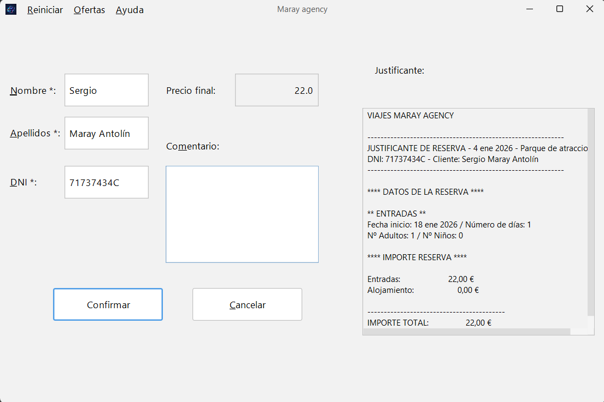

Confirmación y Formalización
Este es el último paso antes de completar su reserva.
En esta pantalla, le mostramos un resumen detallado de
todos los servicios seleccionados para que pueda revisarlos.

Datos Necesarios
- Revisar el Resumen: Verifique que las fechas, número de personas y servicios (parque/alojamiento) sean correctos en el cuadro de texto de la derecha.
- Comprobar el Precio Final: Asegúrese de que el importe total, incluyendo posibles descuentos, es el esperado.
- Introducir sus Datos: Complete los campos obligatorios con su Nombre, Apellidos y DNI.
- Añadir Comentarios (Opcional): Puede escribir cualquier observación adicional para la agencia.
Una vez verificada la información, pulse el botón "Confirmar" para finalizar el proceso.
Si detecta algún error, puede utilizar el botón "Cancelar" para volver atrás y modificar la reserva.